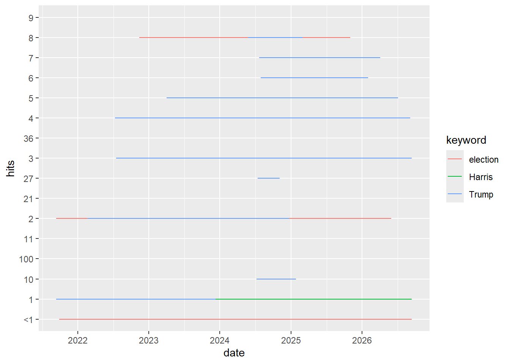
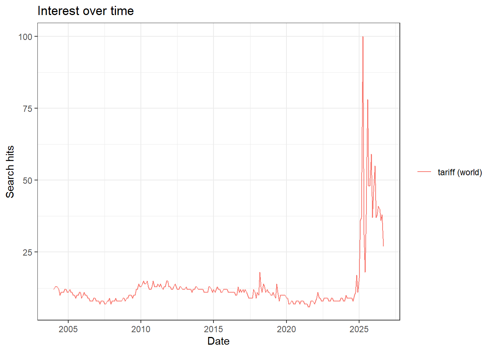
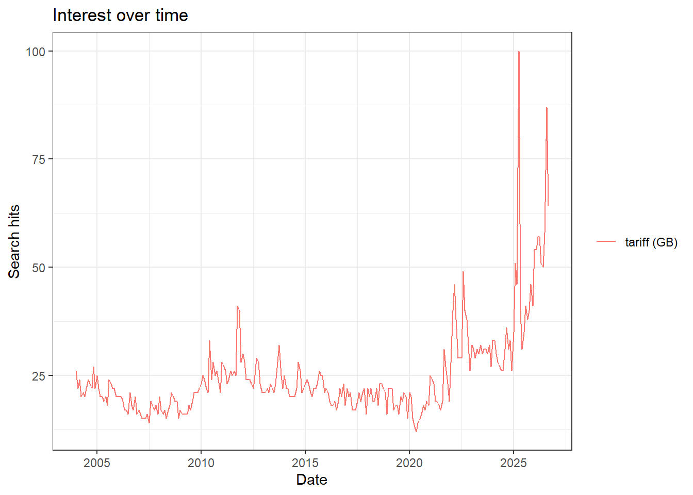
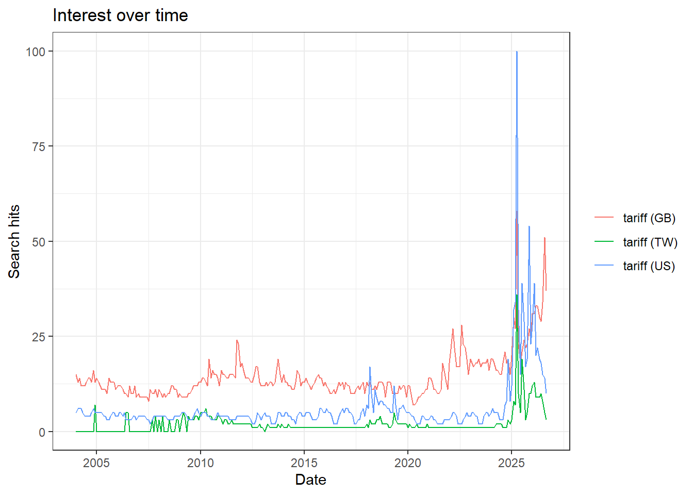
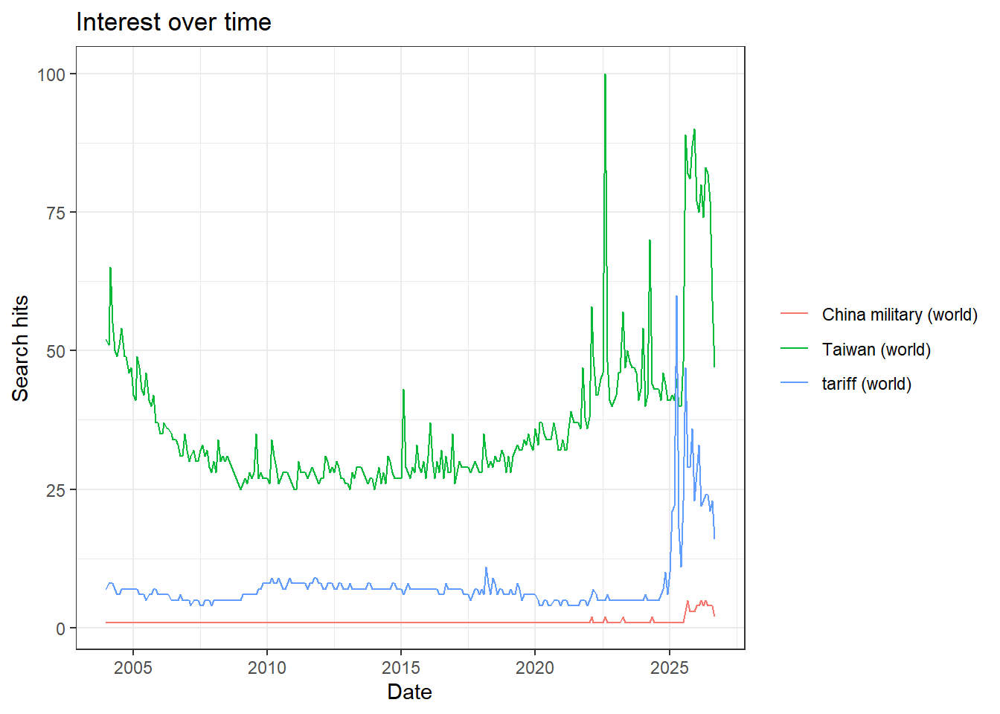

2. c. What are the units? What does a value of 100 mean, and 0?
range(trend_web$Donald.Trump)
[1] 29 93
range(trend_web$Kamala.Harris)
[1] 0 2
range(trend_web$Election)
[1] 8 100
The units are normalized relative search interest on a scale from 0 to 100. A value of 100 represents the peak search interest within the query, while 0 indicates very low or insufficient search volume rather than zero searches.
2. d. Now remove one search term and download again. Did the numbers for the remaining terms stay the same?
library(dplyr)
Attaching package: 'dplyr'
The following objects are masked from 'package:stats':
filter, lag
The following objects are masked from 'package:base':
intersect, setdiff, setequal, union
[1] Time Election.x Election.y
<0 rows> (or 0-length row.names)
No. Most values remained the same, but the most recent Donald Trump observation changed from 30 to 32. This likely reflects Google Trends’ sampling and updating process, especially for the most recent period. The Election values remained unchanged.
3. Collect it from R
3. a. Use the gtrendsR package and the gtrendsR01.R program. The first call in that script is the
same query you just ran by hand.
library(gtrendsR)
Warning: package 'gtrendsR' was built under R version 4.5.3
Rows: 786 Columns: 7
── Column specification ────────────────────────────────────────────────────────
Delimiter: ","
chr (5): hits, keyword, geo, time, gprop
dbl (1): category
dttm (1): date
ℹ Use `spec()` to retrieve the full column specification for this data.
ℹ Specify the column types or set `show_col_types = FALSE` to quiet this message.
ggplot(the_df, aes(x = date, y = hits, color = keyword)) +geom_line()

3. b. Work through the rest of the script: one term over its full history (time = "all"), the same
term in another country, one term across c("US", "GB", "TW"), and three terms worldwide.
# One term over its full historyfull<-readRDS('Lab2/full.rds')plot(full)

# Same term in another countryoc<-readRDS('Lab2/oc.rds')plot(oc)

# One term across US, GB, TWtc<-readRDS('Lab2/tc.rds')plot(tc)

# Three terms worldwidetct <-readRDS('Lab2/tct.rds')plot(tct)

3. c. Section 6 of the script runs names(tct). That call left onlyInterest at its default, so the
object carries several data frames. Which of them did the website CSV not give you?
The website CSV only provided the interest-over-time series. The gtrendsR object also included geographic breakdowns (interest_by_country, interest_by_region, interest_by_dma, and interest_by_city) as well as related_topics and related_queries, which were not included in the downloaded website CSV.
A note on terms
a. Pull both and compare the series. Are they the same?
The two series are not the same. The average interest for “Harris” was 9.22, compared with 2.27 for “Kamala Harris.” The “Harris” series also reached a maximum of 100, while “Kamala Harris” reached 65. This shows that the broader term “Harris” captures substantially more search activity.
b. Harris is also a county, a supermarket chain, and several thousand other people. What does that gap tell you about the difference between a search term and the concept you meant to measure?
This gap shows that a search term is not always equivalent to the concept a researcher intends to measure. “Harris” can refer to many different people, places, and organizations, so searches for “Harris” may include substantial unrelated activity. Using such a broad term can therefore introduce measurement error and weaken construct validity.
4. Compare the two methods
4. a. Line the two series up. Are the numbers identical? If not, by how much, and in which direction?
# A tibble: 6 × 7
date hits keyword geo time gprop category
<dttm> <chr> <chr> <chr> <chr> <chr> <dbl>
1 2021-09-12 00:00:00 1 Trump US today+5-y web 0
2 2021-09-19 00:00:00 1 Trump US today+5-y web 0
3 2021-09-26 00:00:00 1 Trump US today+5-y web 0
4 2021-10-03 00:00:00 1 Trump US today+5-y web 0
5 2021-10-10 00:00:00 1 Trump US today+5-y web 0
6 2021-10-17 00:00:00 1 Trump US today+5-y web 0
The series were not identical. Using R minus website values, the differences ranged from -86 to -26 for Trump, -1 to 1 for Harris, and -98 to -7 for Election. Thus, the R values were generally lower than the website values for Trump and Election, while the Harris series differed only slightly. However, the website and script did not use exactly the same search terms (Donald Trump vs. Trump and Kamala Harris vs. Harris), so some of the observed differences may reflect the search-term choice as well as differences between the two collection methods.
4. b. What are the differences between the two methods? Consider at least:
i. Reproducibility — could someone else regenerate your file exactly?
ii. Provenance — which method records the query parameters for you?
iii. Scale — what happens when you need fifty terms instead of three?
iv. Fragility — what breaks, and how would you know?
The two methods differ in reproducibility, provenance, scale, and fragility.
For reproducibility, the R method is easier to reproduce because the same code can be saved and rerun. However, the exact Google Trends values may still change between pulls, so the original data should be saved. The website method requires the user to manually repeat the same settings and download the data again.
For provenance, R provides a clearer record of the query parameters directly in the code, including the search terms, geography, time range, category, and search type.
For scale, R is more efficient because code can automate repeated data collection, whereas manually downloading data becomes impractical when the number of terms increases.
For fragility, both methods depend on Google Trends, but gtrendsR can be particularly sensitive to changes or restrictions in the underlying service. For example, requests can fail because of rate limiting.
Such failures appear as errors, while more subtle changes in returned values can be detected by comparing and saving repeated pulls.
4. c. Runsection7ofthescript: thesamecalltwice, afewminutesapart. Doyougetthesamenumbers?
What does your answer imply about every finding you might report from this source?
The two identical calls made a few minutes apart returned the same values (TRUE). This suggests that Google Trends data can be stable across closely timed pulls. However, this does not guarantee exact reproducibility at other times because Google Trends is based on sampled and normalized data. Therefore, findings should be reported with the query parameters and collection time, and the original data should be saved for reproducibility.